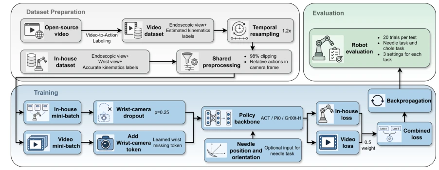
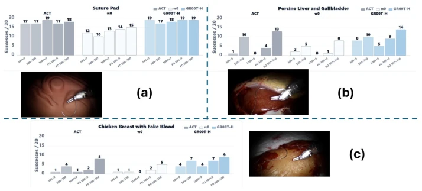

Figure 1: Overview of SurgVIL. The proposed framework combines accurately labeled in-house dataset collected in phantom settings with visually diverse open-source surgical videos. The trained policies are evaluated on real-tissue surgical tasks to assess generalization beyond the phantom.

Figure 2: Flow chart for the dataset preparation, dual-source policy training and evaluation
Figure 3: Experimental Setup. The evaluation was conducted on a dVRK-Si robot system, with an additional wrist camera mounted on the surgical instrument.

Figure 4: Needle task results on (a) Suture pad, (b) Porcine liver and gallbladder, and (c) Chicken breast with fake blood. The results are also listed as table in the Appendix.